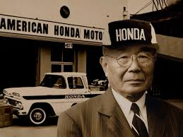
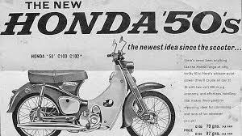
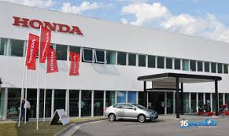
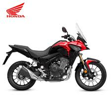

Historia de la marca Honda
La historia de Honda Motor Co., Ltd. comienza en Japón, en 1946, cuando Soichiro Honda, un joven ingeniero apasionado por la mecánica, comenzó a adaptar motores de generadores bélicos en bicicletas para ayudar a la movilidad de la población tras la Segunda Guerra Mundial. Su idea fue simple pero brillante: crear un medio de transporte económico, confiable y accesible para un país en reconstrucción. En 1948, fundó oficialmente la empresa Honda Motor Company, y en pocos años pasó de ser un pequeño taller a una fábrica de motocicletas con presencia nacional. El espíritu de innovación, la calidad mecánica y la búsqueda constante de perfección se convirtieron en el sello distintivo de la marca.
En 1958, Honda lanzó la legendaria Super Cub, una moto ligera, práctica y duradera que revolucionó la movilidad urbana. Fue un éxito mundial: su diseño simple, bajo consumo y fácil mantenimiento la convirtieronen la moto más vendida de todos los tiempos, con más de 100 millones de unidades producidas. Durante los años 60 y 70, Honda se expandió a Estados Unidos, Europa y América Latina, convirtiéndose en el mayor fabricante de motos del mundo. Además, comenzó su participación en competencias deportivas, logrando títulos en MotoGP y Fórmula 1, lo que consolidó su reputación de rendimiento e ingeniería de precisión japonesa.
Honda llegó oficialmente a América Latina en los años 70, y con el tiempo instaló plantas de producción en Brasil, México y Argentina, adaptando sus modelos a las necesidades de la región. En Argentina, la marca inauguró su planta en Campana (Buenos Aires) en 2006, donde produce y ensambla varios modelos populares como la Honda Wave 110, CB125F, XR150L y Tornado 250. Gracias a su confiabilidad y bajo mantenimiento, Honda se convirtió en una de las marcas líderes del mercado argentino, tanto en motos urbanas como en modelos de trabajo y aventura.
En la actualidad, Honda sigue evolucionando con el objetivo de combinar rendimiento, eficiencia y cuidado del medio ambiente. La marca está desarrollando una nueva generación de motos eléctricas e híbridas, buscando reducir las emisiones y mantener la emoción de conducir. Modelos como la Honda CB500X o la Africa Twin representan el espíritu aventurero y tecnológico de la marca, con sistemas avanzados de control de tracción, frenos ABS y diseño aerodinámico.